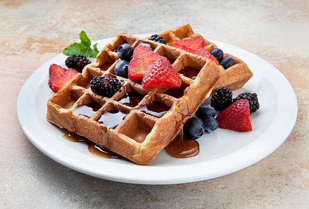

WAFFER CLÁSSICO

Ingredientes
2 xícaras (chá) de farinha de trigo
2 colher (sopa) de açúcar
1/2 colher (chá) de sal
2 colheres amido de milho
3 ovos batidos
4 colheres (sopa) de manteiga sem sal derretida
1 e 3/4 de xícara (chá) de leite
1 colher (sopa) de essência de baurnilha
Modo de preparo
1. Peneire em um recipiente a farinha de trigo, o açucar, o amigo, o fermento e o sal. Reserve.
2. Em outro recipiente misture os ovos batidos com o leite, a manteiga derretida e a essência da baunilha.
3. Despeje sobre a mistura de farinha e rapidamente incorpore os Ingredientes.
4. Aqueça o aparelho para Waffes. Coloque uma concha rasa de massa e espalhe até cobrir o molde do aparelho, feche a tampa e deixe assar até a massa ficar dourada.
5. Retire com espátulas de silicone. Sirva com mel, frutas ou geleia.
Informações adicionais
Você poderá servir estes Waffes no café da manhã com geleia.